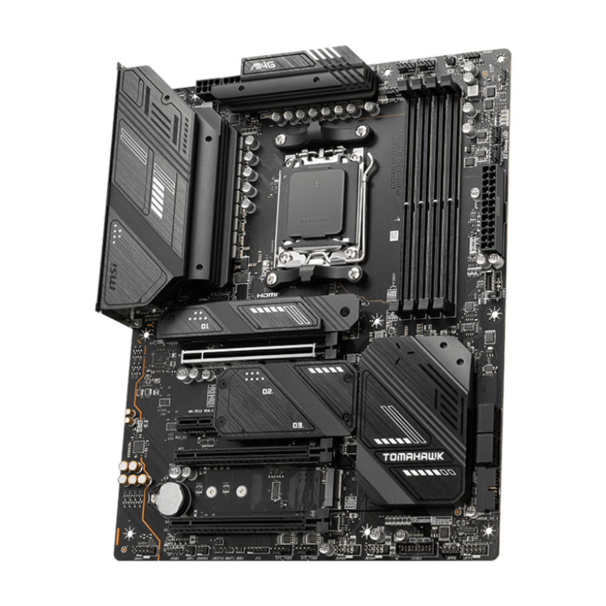

AMD Ryzen 7000 serisi için güçlü AM5 soketli, DDR5 ve PCIe 5.0 desteğiyle modern oyun sistemleri için ideal.
| Özellik | Değer |
|---|---|
| Soket | AM5 |
| Chipset | AMD X670E |
| RAM | 4x DDR5 Slot |
| PCIe | PCIe 5.0 x16 |
| Depolama | 4x M.2 NVMe + SATA |
| Bağlantı | WiFi 6E + 2.5G LAN |